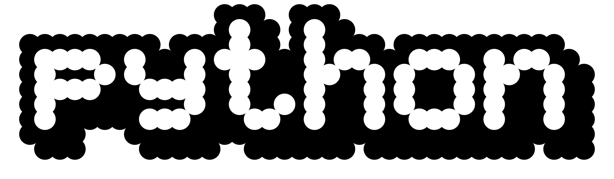
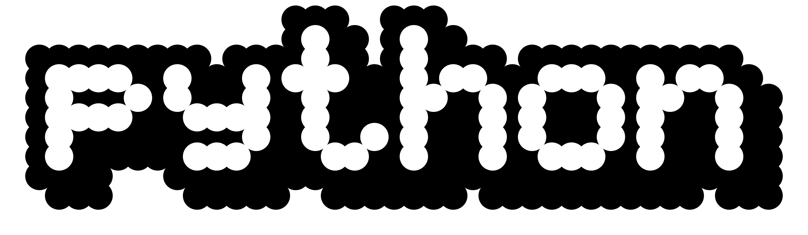
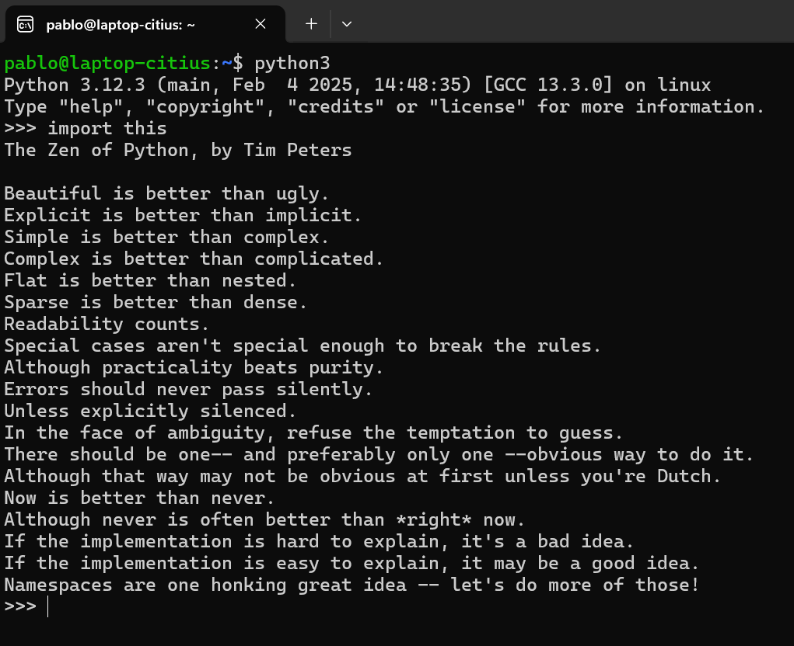
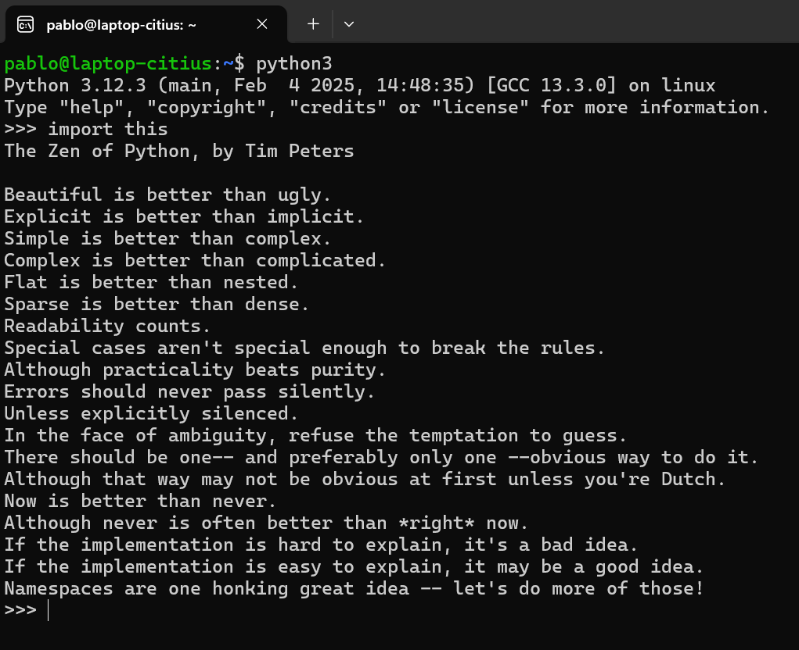

1. Introducción y conceptos básicos
TIOBE index
Calculado según el número de resultados al buscar
+"< language > programming" en varios motores de búsqueda (Google, Bing...).

TIOBE index
Calculado según el número de resultados al buscar
+"< language > programming" en varios motores de búsqueda (Google, Bing...).

Principales usos
- Análisis y visualización de datos
- Machine Learning, IA, Deep Learning
- Investigación científica
- Desarrollo de software (backends, bots)
- Lenguaje de scripting
Razones de su popularidad
- Facilidad de aprendizaje
- Legibilidad, sintaxis sencilla
- Miles de librerías y frameworks
- Gran comunidad y buena documentación
- Portabilidad y flexibilidad
(Breve) historia
 

- Concebido en los años 80 por Guido Van Rossum
- Su desarrollo comienza en 1989, cuando se implementaron las funcionalidades básicas y utilidades importantes como los módulos.
- 1994 $\rightarrow$ Python 1.0, con nuevas funcionalidades como funciones lambda
- 2000 $\rightarrow$ Python 2.0, añadidas las list comprehensions, los assignment operators (+=, *=, /=, $\dots$) y el soporte para Unicode.
- A lo largo de los 2000s se desarrollaron las siguientes versiones 2.x
- 2008 $\rightarrow$ Python 3.0, que supuso un gran rediseño del lenguaje y eliminó mucha redundancia
- Python 2.x y 3.x se siguieron desarrollando por separado, hasta 2020, dónde se acabó el soporte para las versiones 2.x
(Breve) historia
Python está implementado sobre C (CPython), pero también está inspirado por otros lenguaje como ABC (sintaxis base), Lisp (lambdas), Modula3 (módulos), Perl (scripting), Smalltalk (POO) $\dots$
El gran número de lenguajes en los que se inspiró se refleja en su modelo de programación multiparadigma
Python2 vs Python3
Python 3.13 es la versión actual y la recomendada para nuevos proyectos. Python2 dejó de recibir soporte el 1 de enero de 2020.
Existen paquetes que solo funcionan en versiones específicas como 3.10 o 3.12, no pasa nada$^{*}$ si se usan esas versiones, ya que siguen siendo bastante recientes.
Python3 y Python2 no son compatibles entre sí. Lo recomendable y más habitual hoy en día es trabajar sobre Python3.
Características
x = "hola" # x es de tipo string
x = 5 # x pasa a ser de tipo entero (int)
y = 32.4 # y es de tipo float
y = 3 + 5j # y es de tipo complejo
y = True # y es de tipo booleano
if x == 5:
print("x es igual a 5")
else:
print("x no es igual a 5")
if 3 < x and x < 10:
print("x está entre 3 y 10")
print("Buenassss")
x = 5; print(x)
mi_lista = [1, 2, 3, 4, 5]
if 2 in mi_lista or len(mi_lista) > 5:
print("2 está en la lista o la lista tiene más de 5 elementos")
una_lista = ["hey", 4, 1.2]
una_tupla = ("hey", 4, 1.2) # Inmutable (no se puede modificar)
un_diccionario = {"asignatura": "estructuras", "numero de suspensos": "elevado"}
un_conjunto = {"a", "a", "b"} # Mismo resultado que {"a", "b"}
- Tipado dinámico y no declarativo
- Interpretado, no compilado
- Indentación obligatoria (sangrías) $\rightarrow$ no necesita ;
- Sintaxis intuitiva con palabras clave en inglés
- Estructuras de datos integradas y soporte para strings
Objetivos del curso
- Parte 1: Familiarizarse con la sintaxis básica del lenguaje
- Parte 2: Revisar las principales librerías para análisis de datos y aprender cómo desarrollar un proyecto completo.
- Dar una visión práctica del lenguaje, pero asentada en principos sólidos
- Aprender como buscar información en internet (especialmente en páginas de documentación oficial)
 

Algunos aspectos prácticos
Usaremos esta web a lo largo de las clases
(Si está caída por algún motivo, se puede descargar desde GitHub)
Hace falta venir al $80\%$ de las clases para conseguir 1 ECTS
(es decir, hace falta venir a 7 de las 8 clases)
Las clases serán de 16:00 a 18:00, y habrá descanso!